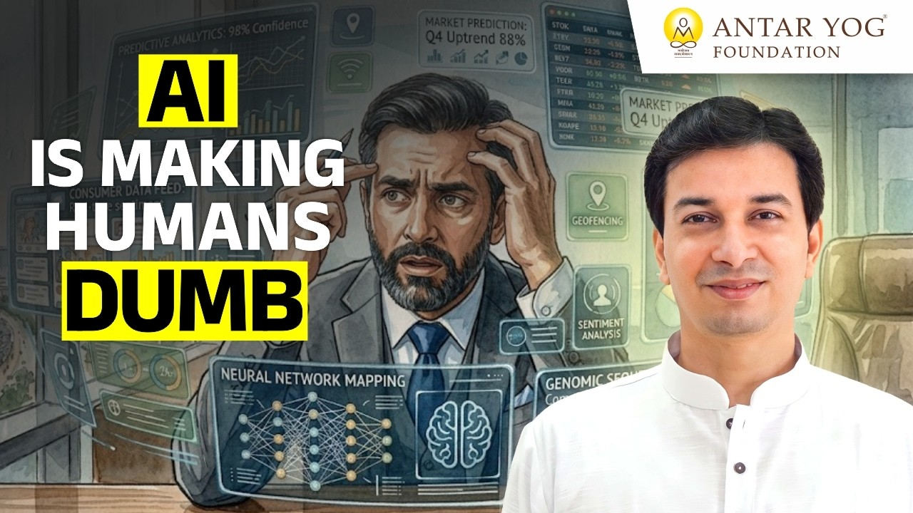

क्या AI हमें मूर्ख बना रहा है? आचार्य जी के अनुसार, हाँ, यदि हम अपनी सोच का काम भी उसे सौंप दें। कैलकुलेटर से लेकर ChatGPT तक हमने अपनी मूल बुद्धि का काम मशीनों को सौंप दिया है: फ़ोन स्मार्ट होता गया और हम सोचना भूलते गए। इसका उपाय प्रतिबंध नहीं, बल्कि विवेक, अर्थात भीतर के गणपति, से AI का पात्रता और उद्देश्य के साथ उपयोग है।
कलियुग का एक पुराना संकेत
शास्त्रों में कलियुग का वर्णन आता है कि धीरे-धीरे यह यंत्रों का युग बन जाएगा। युग के अंत तक मशीनों का ऐसा राज्य हो जाएगा कि मनुष्य भूल जाएगा कि उसने जन्म किसलिए लिया है।
आज हम उसी दिशा में आगे बढ़ रहे हैं। इसलिए यह बात आज कृत्रिम बुद्धि (Artificial Intelligence) के बारे में है, और उससे भी पहले अपनी विवेक बुद्धि के बारे में, जिसे यहाँ गणपति के रूप में समझा गया है।
आविष्कार में कोई दोष नहीं है। प्रश्न यह है कि विज्ञान किसके हाथ में है, और हम उसका उपयोग कैसे कर रहे हैं।
क्या AI हमें मूर्ख बना रहा है?
पहले मनुष्य अपना सारा काम स्वयं करता था। फिर कैलकुलेटर आया। गणित कठिन विषय है, कुछ ही प्रतिशत लोग उसमें निपुण होते हैं, और दुकान के रोज़ के हिसाब में इसकी ज़रूरत पड़ती है ताकि कोई ठग न सके। इसलिए हमने आपत्ति नहीं की।
फिर यह परीक्षाओं में आया, इंजीनियरिंग में आया। धीरे-धीरे अपनी बुद्धि का काम कम होने लगा, क्योंकि कोई और तो कर ही रहा है। आज लोग दो गुणा दो के लिए भी कैलकुलेटर उठाते हैं।
पहले हमें लंबे-लंबे फ़ोन नंबर याद रहते थे। आज की पीढ़ी को पता भी नहीं कि नंबर याद रखे जाते हैं।
आचार्य जी कहते हैं कि फ़ोन स्मार्ट होता जा रहा है और हम dumb होते जा रहे हैं।
अपनी मूल बुद्धि (original intelligence) को खोते-खोते हमने बाहर की बुद्धि को बढ़ा दिया। फ़ोन तो सब जानता है; पर जिसके हाथ में वह है, वह क्या जानता है?
पहले कहा जाता था कि ऐसे तो ग्रंथ ही प्रबुद्ध हो जाएगा। ग्रंथ केवल पूजा के लिए नहीं है, वह आपके भीतर जाने के लिए है।
आपने आखिरी बार कब कोई बात, कोई हिसाब या कोई नंबर बिना फ़ोन के अपनी स्मृति से निकाला था?
"भाषा तक तो यह नहीं पहुँचेगा"
फिर कृत्रिम बुद्धि ने रचनात्मकता और ग्राफ़िक्स में प्रवेश किया। इंजीनियरिंग ड्रॉइंग, वास्तुकार, इंटीरियर डिज़ाइनर, सबके लिए CAD-CAM जैसे यंत्र आ गए। आदेश दिया और चित्र अपने आप बनने लगा। फिर भी कम से कम सॉफ़्टवेयर चलाना तो आना चाहिए था, और चित्रकार का अपना हुनर बचा हुआ था।
तब कहा गया कि यह सब विषय कर लेगा, पर भाषा पर कुछ नहीं कर पाएगा। निबंध लेखन, हिंदी-मराठी के प्रश्नपत्र, इनमें तो नहीं। पर मशीन लर्निंग के सहारे यह वहाँ तक भी पहुँच गया।
यह मानव की प्रगति है, इसमें संदेह नहीं। और यह प्रगति मनुष्य की बुद्धि से, किसी की सिद्धि से ही हुई है। यह अपने आप नहीं आया।
जब विज्ञान सात्विक हाथों से निकल जाता है
यहीं सावधान होने की बात है। यह एक बहुत खतरनाक स्थिति है, क्योंकि यह रजस और तमस के हाथ में चला गया है।
जब कोई चीज़ पहली बार बनती है, तो वह सात्विक व्यक्ति के हाथ में होती है। भारत में जब फ़िल्म उद्योग बना, तो पहली फ़िल्म "सत्य हरिश्चंद्र" थी, क्योंकि उस समय वह कुछ पवित्रता के साथ बनाई गई थी।
सृजन के मूल में यह भाव है:
अहं ब्रह्मास्मि
"मैं ब्रह्म हूँ।"
(बृहदारण्यक उपनिषद् १.४.१०)
"मैं ब्रह्म हूँ।" जब ब्रह्म भाव होता है, और उसके साथ सरस्वती, अर्थात सत्वगुण (purity, clarity) आता है, तभी सच्चा आविष्कार होता है। सच्चा वैज्ञानिक जानता है कि उसके भीतर वह आध्यात्मिकता है।
पर केवल विज्ञान के अनुयायी, जिनका सत्वगुण से कोई लेना-देना नहीं, शास्त्रों के अनुसार शुक्राचार्य, अर्थात दैत्यों के गुरु, के विभाग में चले जाते हैं। मोबाइल फ़ोन के आविष्कारक में बहुत सी श्री विद्या, बहुत सा अध्यात्म रहा होगा; पर उसके अनुयायियों में वह समझ नहीं होती। उनके लिए यह विलासिता की वस्तु बन जाता है।
आचार्य जी कहते हैं कि यह भाड़े की बुद्धि है, और ऊपर से मुफ़्त भी।
भाड़े की बुद्धि और नौकरियाँ
गूगल आया तो खोज दो मिनट का काम हो गया। फिर पत्र लेखन, जो कभी परीक्षा का हिस्सा था, खत्म। रिज़्यूमे भी अब यही बना देता है।
आपके पास जो ChatGPT जैसा साधन है, वह कृत्रिम बुद्धि का एक अत्यंत प्रारंभिक रूप है। इसके ऊपर के स्तर आगे चलकर बहुत सी नौकरियाँ समाप्त कर देंगे।
यह मेरा कथन नहीं है। इसके रचयिता, स्वयं वैज्ञानिक, कह रहे हैं कि दस वर्षों में यह मानवता को ही समाप्त कर सकता है।
हर प्रश्न की एक कीमत है: आधा लीटर पानी
हर यंत्र के पीछे एक डाटा सेंटर होता है। और क्योंकि यह मुफ़्त है, हम व्यर्थ के प्रश्न भी पूछते रहते हैं। किसी लड़की को कैसे आकर्षित करें, बस प्रश्न पर प्रश्न, समय बिताना, किसी भी भाषा में।
आचार्य जी बताते हैं कि जब भी हम कोई प्रश्न पूछते हैं, तो इस संसार का आधा लीटर पानी खत्म होता है।
हर query, जो आप लिखते हो, उसके पीछे डाटा सेंटर तुरंत गर्म होते हैं, और उन्हें ठंडा करने के लिए पानी लगता है। और वह पीने का पानी होता है, समुद्र का पानी काम नहीं आता। यह मेरा शोध नहीं है; आप स्वयं खोजकर देख लीजिए।
जब अमेरिका को यह समझ आया, तो विकास के नाम पर डाटा सेंटर भारत में स्थापित करने को दे दिए गए। और हम प्रसन्न हैं, जबकि हमारा पानी समाप्त होगा। अरबों लोग प्रश्न पूछ रहे हैं, और उतनी देर ये विशाल यंत्र गर्म होते रहते हैं।
अब वैज्ञानिक सोच रहे हैं कि डाटा सेंटर अंतरिक्ष में कैसे ले जाएँ, या समुद्र के नीचे खारे पानी में कैसे रखें। और पूरा इंटरनेट भी समुद्र के भीतर बिछे तारों से आता है। वायरलेस तो केवल आपके घर के भीतर है; बाकी हर कंप्यूटर तार से जुड़ा है। इतना खर्च हो रहा है।
जो प्रश्न आपने आज किसी AI से पूछे, उनमें से कितने सचमुच ज़रूरी थे?
तो क्या AI पर प्रतिबंध लगा दें?
नहीं। विवेक कहता है कि यह उसके पास होना चाहिए जिसे सच में इसकी आवश्यकता है, जिसकी पात्रता (eligibility, inner worthiness) है, जो सत्वगुणी है। यह हर किसी को मिल गया, तो आगे चलकर घातक होगा।
सोचिए: दस-चालीस आदमियों का काम यह अकेला कर रहा है, तो नौकरियाँ कहाँ बचेंगी? और जिन्हें नौकरी नहीं मिल रही, वे बैठे-बैठे यही पूछ रहे हैं कि अवसाद से कैसे निकलें, यह कैसे करें, वह कैसे करें। और सारा भार वापस AI पर ही आ रहा है।
एक सुझाव: थोड़ा सा शुल्क लगा दो, एक रुपया प्रति प्रश्न, फिर देखो क्या होता है। पात्रता का प्रमाण हो, उपयोग का उद्देश्य हो, आध्यात्मिक शोध के लिए या किसी विशेष कार्य के लिए, या स्नातक के बाद ही उपयोग की अनुमति हो। कुछ न कुछ नियम होना ही चाहिए। वरना आने वाले समय में बहुत समस्या होगी।
मुफ़्त का असली दाम
AI मोबाइल के ऐप्स में आ गया। दस मिनट में यह, इतने मिनट में वह। सब कुछ तुरंत।
पर इन ऐप्स का व्यवसाय क्या है? पुराने वीडियो गेम याद कीजिए: क्रिकेट का एक ओवर खेला, और विज्ञापन आ गया। खेल मुफ़्त था, कमाई विज्ञापन से थी। वैसे ही किराने के, खाने के, डिलीवरी के ऐप मुफ़्त हैं, पर हर जगह प्रायोजित विज्ञापन, ऑफ़र, और दिमाग को लगातार उकसाना। कानूनी रूप से गलत नहीं, पर यह पक्का एक मार्केटिंग मशीन बन चुका है।
परिणाम? मोहल्ले के किराने वाले का धंधा कब का खत्म हो गया। और दस मिनट की डिलीवरी के चक्कर में खरीदारी पर खरीदारी होती रहती है। जो पहले से ही राजसिक और तामसिक है, वह कंगाल हो जाएगा।
अपने गणपति को जगाइए
इसलिए गणपति का, अर्थात अपनी विवेक बुद्धि का, ठीक से उपयोग करना होगा। AI एक अत्यंत खतरनाक वस्तु है, और इसके वैज्ञानिक स्वयं दस वर्ष की बात कर रहे हैं।
कैसे? पहले संसाधन खत्म होंगे। पानी खत्म होगा। और पानी प्राण का प्रतीक है; पानी है, तो प्राण है।
मुख्य बातें
- कलियुग को यंत्रों का युग कहा गया है, जिसमें मनुष्य भूल जाएगा कि उसने जन्म किसलिए लिया।
- कैलकुलेटर से AI तक, हर कदम पर हमने अपनी मूल बुद्धि का काम बाहर सौंप दिया: फ़ोन स्मार्ट हुआ, हम नहीं।
- सच्चा आविष्कार ब्रह्म भाव और सत्वगुण से होता है; पर आज यह विज्ञान रजस-तमस के हाथों में है।
- AI से जुड़ा हर प्रश्न लगभग आधा लीटर पीने का पानी खर्च करता है, इसलिए व्यर्थ प्रश्न पूछना संसाधनों की बर्बादी है।
- समाधान प्रतिबंध नहीं, पात्रता है: यह उसके पास हो जिसे सच में ज़रूरत है और जो सत्वगुणी है।
- मुफ़्त ऐप्स विज्ञापन और खरीदारी की मशीन हैं; विवेक के बिना ये हमें कंगाल बना सकते हैं।
- गणपति, अर्थात अपनी विवेक बुद्धि, का ठीक से उपयोग करना ही इस युग में बचाव है।

आगे पढ़ें

क्या आध्यात्मिक जीवन का अर्थ है कि मनोरंजन पूरी तरह छोड़ दिया जाए? आचार्य उपेंद्र जी कहते हैं, नहीं। असली प्रश्न यह नहीं है कि आप क्या देखते हैं,…
क्या कभी ऐसा हुआ है कि आप किसी एक काम के लिए निकले, और लौटे तो कुछ और ही करके? यह छोटी-सी बात योग के सबसे गहरे सूत्र से जुड़ी है। आइए, आचार्य उपेंद्र…

हम सब मानकर चलते हैं कि जो कुछ हम करते हैं, वह हमारा अपना निर्णय है। पर क्या सच में ऐसा है?